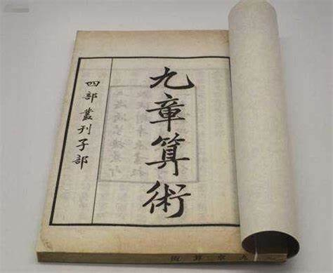
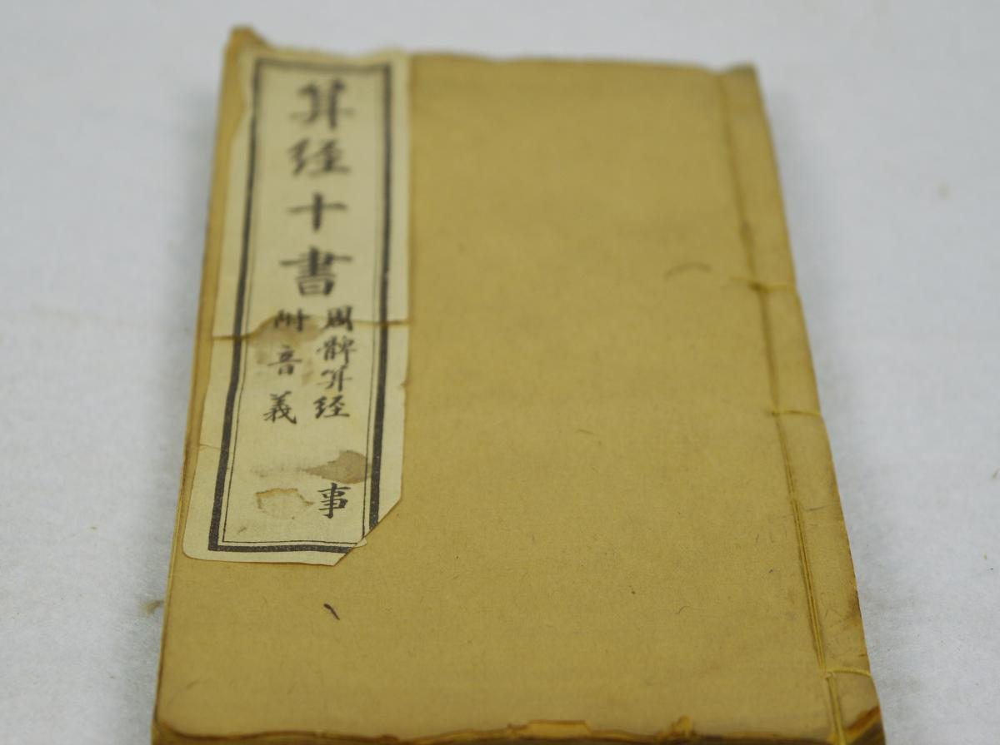
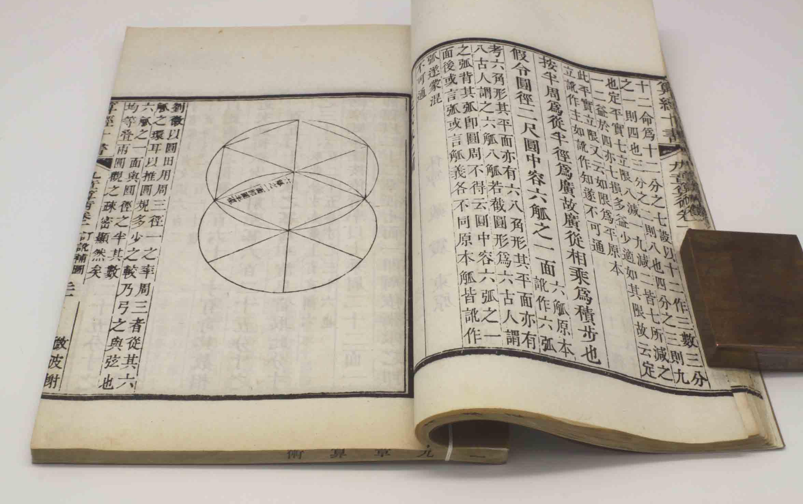

探索数学的璀璨文明
在这片古老的土地上,数学之花散发着灿烂的光芒
辉煌成就

算术发展
从刻竹简的计算到《九章算术》的理论体系,算术在中国古代成果丰硕。

几何学理论
《周髀算经》等典籍奠定了中国古代几何学基础,对后世影响深远。

方程求解
中国古代数学家早期就已掌握了一元一次方程的解法,并逐步发展出高阶方程的解题技巧。
发展历程
甲
甲骨文记录
甲骨文是中国最早的系统文字记录,其中包含了一些简单的计算。
九
《九章算术》问世
《九章算术》是中国古代数学的代表著作,系统地总结了中国古代数学成就。